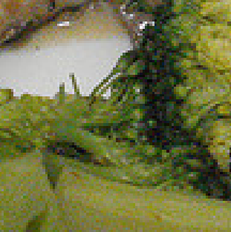
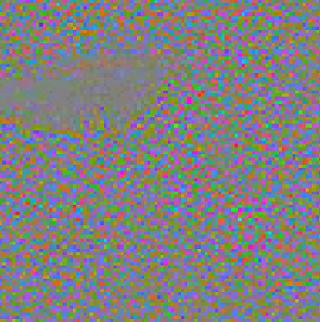

Module 2 · Nettoyer : le bruit à la loupe
Seules les couleurs sont abîmées
Photo bruitée

Original retrouvé

Différence (× 6) : du bruit de couleur
Force du bruit, par canal
0,96
2,35
1,97
Luminosité
Couleur bleue
Couleur rouge
La luminosité, qui porte les formes, est intacte : le bruit ne touche que les couleurs. → On fabrique un faux bruit identique pour entraîner notre modèle sur des milliers de photos propres.
Leyenda · Nettoyer · Le bruit à la loupe
8 / 15
JULIEN (1 min). Avec les originaux, on peut faire une soustraction : photo bruitée moins original, et il ne reste que le bruit. On l’amplifie six fois pour le voir : c’est un grain de toutes les couleurs. On a ensuite séparé l’image en deux informations : la luminosité, qui porte les formes et les détails, et la couleur. Résultat : sur la luminosité, le bruit est quasi nul, à peine plus qu’un simple réenregistrement en JPEG. Tout le bruit est dans les couleurs. C’est une info précieuse : on a pu fabriquer un faux bruit qui ressemble au vrai, et l’ajouter à des milliers de photos propres du premier livrable. Comme ça, on a autant d’exemples d’entraînement qu’on veut, alors qu’on n’avait que 148 vraies photos bruitées.